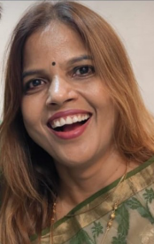

Assistant Professor in Senior Scale (Level-11) April 2023 - till date
Department of Microbiology, Ram Lal Anand College, University of Delhi

Dr. Nidhi Subhash Chandra
Assistant Professor, Department of Microbiology
Ram Lal Anand College, University of Delhi
Deputy Dean, DSW
South Campus, University of Delhi
drnidhischandra@gmail.com
K-6, 3rd Floor, Sawan Park, Ashok Vihar Phase-3, Near Sundarlal Jain Hospital, New Delhi - 110052
011-24112557
University of Rajasthan, Jaipur, Rajasthan, India
2010
University of Rajasthan, Jaipur, Rajasthan, India
2004
University of Rajasthan, Jaipur, Rajasthan, India
2002
Microbiology
Molecular Epidemiology
Environmental Microbiology
Antimicrobial activity of ethanomedicinal plants
AMR
Molecular Biology
Virology
Department of Microbiology, Ram Lal Anand College, University of Delhi
Department of Microbiology, Ram Lal Anand College, University of Delhi
Department of Botany, University of Delhi
ICMR Virus Unit, I.D. & B.G. Hospital, Beliaghata, Kolkata, West Bengal
SMS Medical College & Hospital, Jaipur, Rajasthan
Guiding 1 Ph.D. student as supervisor, 1 Ph.D. student as co-supervisor, 1 postdoc and 1 dissertation student.
Guided 10 B.Sc (H) Microbiology students under CRG Scheme.
Mentoring 6 students review writing
Mentored 10 students for review article and chapter writing
Journal Articles
Book
Book Chapters
Sequences in GenBank (17)
Submitted 17 partial sequences (343 bp) in GenBank. Accession
numbers:
FJ231471 – FJ231487.
View on GenBank:
https://www.ncbi.nlm.nih.gov/nuccore/
Presentation and resource person:
FDP and Workshops attended
Seminar/ Conferences/webinar/events attended
Seminar/ Conferences/webinar/events organized
FDP/ workshops organized
Workshops
Symposia